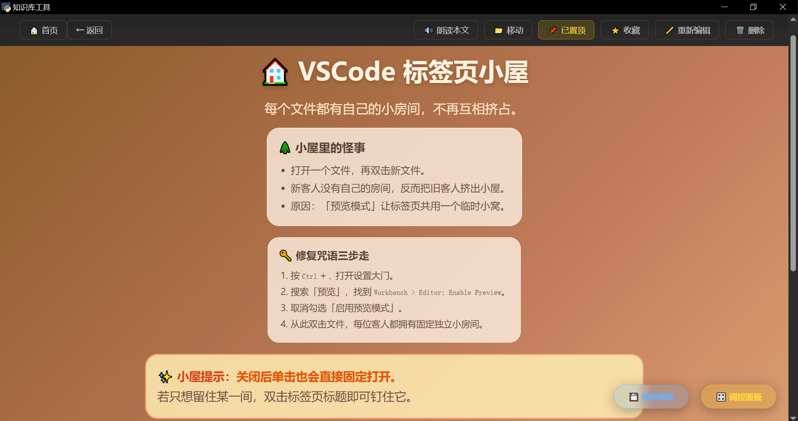
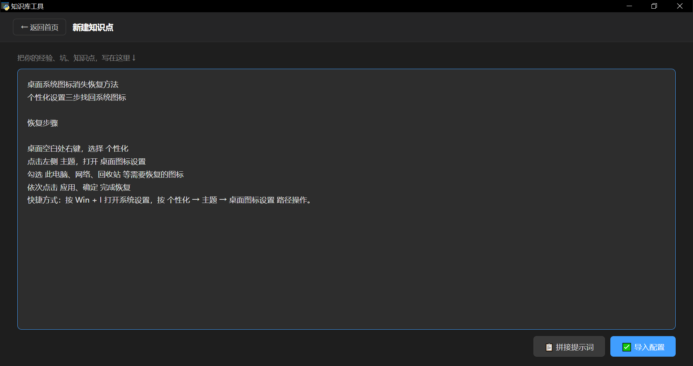
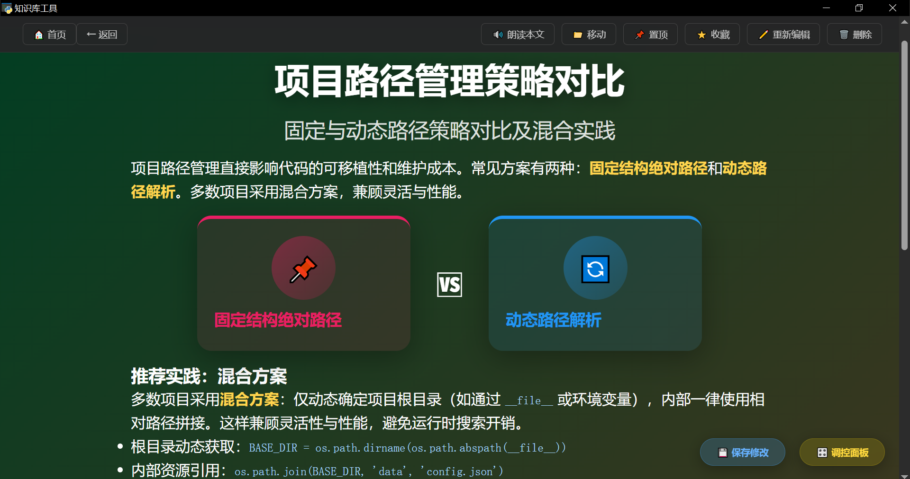
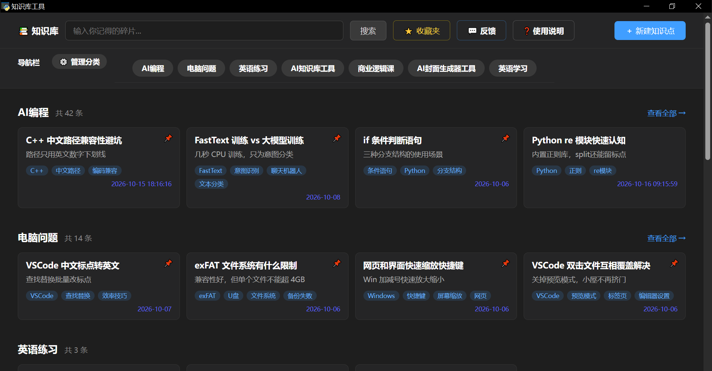

AI知识库工具使用说明
一、工具简介
注意: 本知识库工具实际是一个小型网站,无论在哪个界面点击右上角的×号,都会退出工具。所以要习惯点左上角的返回首页。
借助免费 AI 整理知识，生成结构清晰的知识点页面，把每天学到的碎片知识，变成属于你自己的知识库。让枯燥的学习变得有趣味，由于每个页面都可以个性化设计，复习时也不会视觉疲劳。

二、30秒快速上手
- 点击首页的新建知识点
- 在文案区录入知识点
- 点击拼接提示词
- 粘贴给AI
- 复制AI写好的配置文件
- 回到工具点击导入配置
- 进入知识点预览，第一条知识录入成功，点击页面顶部移动按钮，即可查看当前知识点属于哪个分类。
三、如何录入知识 具体操作流程
第1步 新建知识点
在文案区输入知识内容

第2步 拼接提示词
点拼接提示词按钮，工具自动把提示词和知识点拼接在一起，并完成复制
第3步 直接粘贴给免费AI
免费AI就可以，作者推荐 deepseek 和 元宝，kimi也行但是免费额度有限。
第4步 复制AI写好的配置文件
回到新建知识点页面，点击导入配置，直接进入知识点页面预览。（什么是配置文件，它是AI根据提示词写的一段代码，就是知识点的页面样式，有固定格式，开始是 window.PAGE，结尾是 } 大括号）
第5步 知识点页面编辑
有调控面板，可以调页面元素大小和修改文字，目前不支持修改对比卡片，其他都可以。小修小改自己调（调整完大小或者修改文字后别忘了点保存）。
大改就交给AI，因为刚刚给过AI提示词和知识点，修改时直接用自然语言告诉AI怎么改就行。比如让AI把样式改得再丰富些，或者用地方方言讲述知识，或者改成童话风格太空探索风格等等，让AI重新写好配置文件，点重新编辑就可回到新建知识点，点导入配置即可进入知识点页面预览。
如果什么也没改，不用点保存修改，工具会自动保存知识点页面。
点页面顶部的移动按钮，可以查看当前知识点的所在分类（AI写配置文件时，会主动把知识点归类。如果知识点跟现有分类都不匹配，工具会新建一个分类，把知识点放进去）。如果你觉得AI归类不合理，可以把知识点移动到其他分类。也可以输入新分类名，就可以创建一个新的分类，刚录入的知识点也会自动进入新建的分类。

四、知识点页面介绍
移动和重新编辑在上面第5步已经介绍过。
朗读本文：直接点击即可朗读本文，声音有些机械，但是生成速度快。
置顶按钮：目前最多支持4条知识点置顶。
收藏按钮：点击收藏后，去首页即可看到收藏夹。
删除按钮，不要轻易点，删除后不可恢复。
五、首页介绍
最上面知识库字样右边 是搜索框，开始没有知识点，什么也搜不到。
收藏夹：可查看收藏的知识点。
反馈：使用中发现什么问题可以反馈给作者，跳转到 Gitee Issues 页面提交。
使用说明：点开后就是这个使用说明书。
下面一点导航栏，有管理分类按钮，刚开始没有分类，点击后什么也不显示。第一步要先录入知识，工具会自动新建分类。

六、常见问题
调控面板挡住按钮怎么办
把鼠标移动到调控面板顶部，会出现十字箭头，点击并移动位置就可以了
配置文件导入失败是怎么回事
可能是AI写的配置文件格式有问题，或者复制配置文件的时候，把多余内容复制进去了。注意配置文件的开头是window.PAGE，结尾是 } 大括号） 如果是deepseek，元宝或者kimi一般不会出错
知识点如何防止重复录入
在新建知识点的文案输入区,写完知识点拼接提示词时,工具会自动检测新知识点是否重复，但不保证一定能检测出来 。 如果觉得以前录入过，但是工具没检测出来，可以到首页搜索一下有没有相关知识
朗读没有声音怎么办？
- 检查系统是否安装了中文语音包（Windows 设置 → 时间和语言 → 语音）
- 在知识点页面，点击保存修改，会删除旧的音频缓存，再点击朗读本文，会重新生成音频。
- 如果依然不行，可能是系统语音引擎异常，重启工具后再试。
分类顺序为什么变了？
分类顺序按“分类创建时间”排列，后来创建的分类会排在后面。如果你编辑了某个知识点，不会影响分类顺序。如果发现顺序异常，请反馈给我们。
怎么备份我的知识库？
直接复制整个 data/ 文件夹即可。里面包含所有知识点、分类索引和音频缓存。恢复时，把文件夹覆盖回原位就行。
怎么修改知识点的排版样式？
在知识点页面点击重新编辑，让 AI 重新生成配置文件，再重新导入即可覆盖。注意：重新让AI写配置文件，不用再拼接提示词，直接用自然语言提需求就行。
数据会上传到云端吗？
不会。所有数据都存在你本地 data/ 文件夹里，该AI知识库工具不用联网。
AI 知识库工具 · 使用说明 · 版本 v1.0